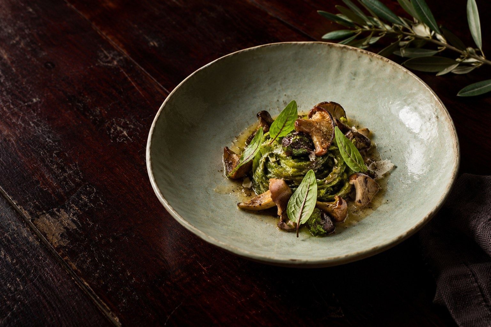

CUCINA DI TERRITORIO · SPIRITO LIBERO
Il bosco,
nel piatto.
Seguiamo le stagioni.
Ci perdiamo nei sapori.
IL TEMPO DELLA TERRAAutunno / Inverno
Edizione 01 — 2026
SCOPRI SELVA ↓
Edizione 01 — 2026
01 / LA NOSTRA NATURASEMPLICE. MAI SCONTATA.
 LA MATERIA, PRIMA DI TUTTO.
LA MATERIA, PRIMA DI TUTTO.Ogni piatto
comincia molto
prima della cucina.
Nella terra. Nelle mani di chi la lavora. Nella pazienza di aspettare il momento giusto.
SELVA è un’idea di ospitalità essenziale: pochi elementi, scelti con cura, e tutto il tempo per assaporarli.
La filosofia SELVA

UN PERCORSO, TRE MOMENTI01 / 03
DALLA TERRA ALLA TAVOLA
La materia.
Ascoltare la stagione. Lasciare che sia lei a decidere da dove cominciare.

03 / RESTARE UN PO’ DI PIÙIl posto giusto.
Le esperienze SELVA
Il posto giusto.
Le persone giuste.
Il resto può aspettare.
Le esperienze SELVACI VEDIAMO A TAVOLA.
Prenditiil tuo tempo.
PRENOTA LA TUA ESPERIENZAUN INCONTRO. UN RICORDO.